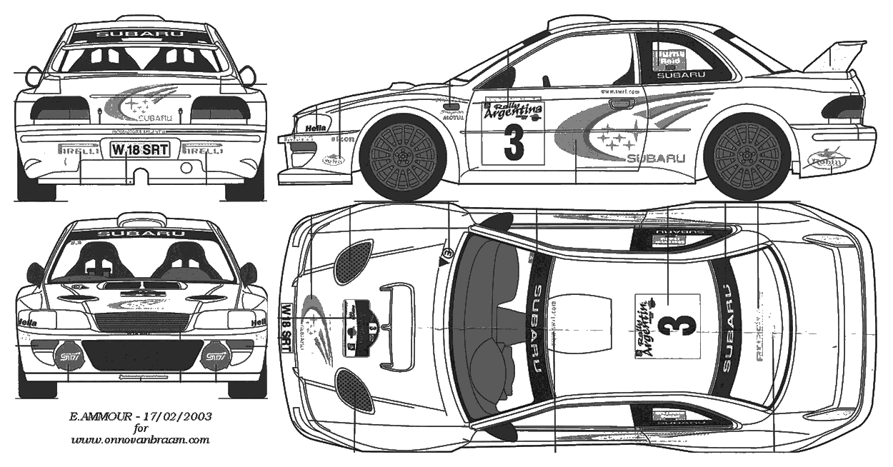
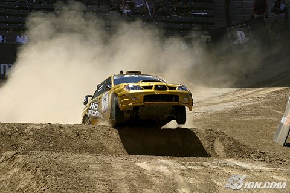

Не повторять! На этом размотали не одну машину!
Удивительно, но на начальном этапе карьеры, отец Колина, Джимми совсем не помагал своему отпрыску. Колин начинал с низов. Однажды он и его друзья смастерили, сварили из всякого хлама и частей других машин, автомобиль способный ездить, и вдоволь на нем поотрывались.
Это лишь усилило стремление Колина к гонкам. Интересный факт, когда-то Колин признался, что изначально вовсе не помышлял о том чтобы гоняться в ралли, все его внимание и желание было приковано к кольцевым гонкам.
Но выпал случай и жажда скорости возобладала. В 1985 году Колин согласился провести ремонт, а именно заменить коробку передач на машине своего друга. В обмен за это он мог принять участие в ралли на этом автомобиле. Итог 14 место и это при том, что Колин вылетел с дороги в кювет. “Мы точно слетели бы где-нибудь, это был просто вопрос времени, но это было здорово, не было советов опытных, а результат был более чем хорошим, потому что я делал всё сам и с помощью парней из автоклуба”— вспоминал Колин Макрей.
Этого результата было достаточно, для того чтобы убедить отца Колина, Джимми Макрея в профпригодности своего сына. В 1986 году, Джимми помог Колину приобрести Talbot Sunbeam и отдал ему для использования в роли технички семейный фургончик. И весь 1986 год Колин провел учавствуя в чемпионате Шотландии, исколесив всю страну и очень быстро набирая опыт. Позже Колин шутливо вспоминал, что в то время ему приходилось тратить больше времени на ремонт семейного фургончика, чем на обслуживание раллийного автомобиля.
По итогам чемпионата Шотландии Колин занял 18 место и получил шутливое прозвище «Летучий кирпич» за напористость, с которой он покорял раллийные спецучастки. Но уже тогда, некоторые знатоки ралли, заметили нечто особенное в этом парне и осторожно стали высказываться о великом будущем молодого Колина.
В 1987 году ввиду сильной финансовой ограниченности, Колин вместе с отцом приняли решение поменять автомобиль на менее мощный Vauxhall Nova Sport, но это сулило помощь со стороны автопроизводителя и обеспечило Колину программу выступлений в ралли на более важных этапах, в том числе в 1987 году состоялся дебют Колина Макрея в чемпионате мира на ралли Швеции. По ходу дистанции, Макрей бесчисленное количество раз улетал в сугробы, но все же смог добраться до финиша на 36 месте в общем зачете и на 3 в своем классе, что можно расценивать как довольно неплохой результат.
Успех пришел к Колину в 1988 году, он стал чемпионом Шотландии. Для дальнейшего развития в 1989 году было решено сделать ставку на новый автомобиль Ford Sierra RS Cosworth и еще раз попытать счастья на ралли Швеции. И это себя оправдало. Он финишировал на 15 месте, и по ходу гонки показывал очень хорошие времена, в чистой борьбе опережая знаменитых раллистов, подвела лишь коробка передач. Затем последовали 2 победы в национальном чемпионате и уникальное 5! место по итогам ралли Новой Зеландии, и это окончательно убедило всех, что перед ними будущая звезда, и не помочь такому таланту просто грех.
Компания Форд предложила ему контракт на 1990 год на выступления в различных ралли национального уровня и редкие выезды на международные. Но это было сложное время. Поддержка команды была не всеобъемлющей, денег не хватало. Да и репутация у Колина была не самая лучшая, так как он часто бил машины, и в этом был единственный выход, как считал сам Колин. Он объяснял это тем, что чтобы удержаться на плаву, нужно очень быстро прогрессировать, а для этого нужно очень быстро ехать, совершать ошибки и только так быстро учиться, можно было конечно развиваться более медленно , более планомерно, но на это времени и средств у Колина Макрея не было.
Так вот, несмотря на поддержку команды Форд, это было очень сложное время. И старт на следующем ралли зависел от того, как финишировал на прошлом, и Колину Макрею необходимо было найти тонкую грань между скоростью и ошибками. Колин справился с давлением и занял 2 место по итогам чемпионата Великобритании 1990 года, а также победил на международном ралли Картель. Благодаря этим результатам Колин сумел сохранить свое соглашение с Фордом и продолжить выступления.
Эта была все же довольно мрачная перспектива, так как денег и возможностей критически не хватало. Но Колин продолжал делать свое дело, он продолжал летать по спецучасткам, выжимая все что можно и что нельзя из своего автомобиля и слава небесам, на его пути появился Дэвид Ричардс, основатель и руководитель компании Продрайв.
Контент для лиц старше 18 лет
Дэвид Ричард как раз искал молодое дарование и был очень вдохновлен тем, что показывал Колин Макрей за рулем раллийного автомобиля. В общем Дэвид пригласил Колина встать у истока нового проекта и сесть за руль никому еще неизвестной на тот момент Subaru. Колин с радостью согласился.
Именно Колину сегодня обязана компания Субару своей мегапопулярностью. А тогда субару это был пустой звук, и это божье провидение, что сошлись все составляющие: Колин Макрей, Субару, Продрайв, Дэвид Ричард. Вообще сначала в Субару ставку сделали на раллийных зубров и собрали под своим крылом таких великих гонщиков как Маркку Ален и Ари Ватанен (кстати именно Ватанен был кумиром у Колина, и их стили пилотирования во многом схожи как говорят знатоки) и на воспитание хотели принять по-настоящему талантливых гонщиков, почему и пригласили Колина.
.gif)
Но Колин превзошел все ожидания. Он без всякой раскачки рванул так, что на первом же году сотрудничества с продрайв и субару, на совершенно новой и никому неизвестной машине Subaru Legacy, стал чемпионом Великобритании победив на 6 гонках из 6 возможных. После этого феноменального успеха Макрей и Субару были во всех газетах, и пришла популярность. Субару отблагодарили Колина тем, что в 1992 году помимо участия в чемпионате Великобритании, выставили его на этапы чемпионата мира. В том году Колин снова стал чемпионом Великобритании, а также выступил на 5 мировых этапах, отметившись на одном из них очень высоким 2! местом, и в итоге заняв 8 место в чемпионате мира, попутно кстати опередив своего кумира и партнера по команде, чемпиона мира 1981 года Ари Ватанена.
В Субару поняли, что Колин готов к достижению еще более высоких целей и свежеиспеченного двухкратного чемпиона Великобритании по ралли отправили покорять Тихоокеанский чемпионат и Чемпионат мира 1993 года с полной программой выступлений. И в том же году Колин Макрей добыл свою первую победу, случилось это на ралли Новой Зеландии на автомобиле Subaru Legacy. Эта победа впоследствии осталась единственной у этого автомобиля, так как уже разрабатывалась новая гоночная машина, легендарная Subaru Impreza.
После победы в Новой Зеландии, подиума в Швеции и ряда других хороший результатов, Колин Макрей занял по итогам чемпионата 5 место, опять опередив своего более именитого напарника Ари Ватанена. После чего фин Ари Ватанен покинул команду. Кстати забыл указать, после того как Колин Макрей полностью переключился на чемпионат мира, на его место в чемпионате Великобритании взяли еще одно молодое дарование Ричарда Бернса!
Следующий 1994 год, сначала вроде бы не предвещал ничего нехорошего, все складывалось для Колина хорошо, хорошие показатели, новая быстрая машина, вроде живи да радуйся, но место ушедшего из команды Ари Ватанена занял двухкратный чемпион «Эль Матадор» испанец Карлос Сайнс, который не потерпел бы вторых ролей. И начался новый и очень сложный период в карьере Колина Макрея. Ему приходилось мириться с тем, что все мощности и поддержка команды были брошены на подмогу Карлосу Сайнсу, а ему самому предстоит хорошенько постараться, чтобы выйти из тени чемпиона.
И сезон начался очень сложно. Карлос Сайнс набирал очки, а у Макрея все никак не складывалось, сходы и дисквалификация, и к середине сезона сложилась провальная картина для Колина. Руководитель команды Дэвид Ричард был вне себя от ярости и даже снял Колина с участия на ралли 1000 озер. Но затем Колин все же взял себя в руки и снова победил на своем уже любимом ралли Новой Зеландии и всерьез схлестнулся с Карлосом за победу на ралли Великобритании. Колин Макрей вырвал победу на ралли Великобритании, сильно провел конец сезона и поднялся на 4 место в личном зачете, а самое главное громко заявил о том, что уже более не будет на вторых ролях и что имеет большие планы на чемпионство в следующем году.
.gif)
Все понимали, что в следующем 1995 году грянет гром, поскольку два амбициозных и звездных гонщика, рано или поздно устроят заварушку. Но сезон начался опять не в пользу Колина. Сначала Сайнс лидировал в чемпионате. Затем Колин смог склонить чашу весов на свою сторону. И к последним этапам сезона уже Колин Макрей был лидером чемпионата. А после того как команда Тойоты была дисквалифицирована из чемпионата вместе со своими звездными гонщиками Юхой Канкуненном и Дидье Ориолем, также претендовавшими на титул, осталось только два претендента на титул Колин Макрей и Карлос Сайнс. И гром грянул.
Перед предпоследним этапом ралли Каталонии, Колин Макрей опережал Карлоса в личном зачете на 5 очков. И победа могла обеспечить Колину досрочный титул чемпиона. Но руководство команды решило по-своему. В заключительный день ралли, Карлос Сайнс незначительно опережал Колина и Дэвид Ричард, глава продрайв, приказал своим подопечным, дабы не рисковать хорошими очками, сохранять свои позиции. Но Колин Макрей и слышать об этом не хотел. Он был сказочно близок к своему долгожданному титулу, и ему было достаточно хорошей атаки, чтобы опередить Карлоса.
И конечно он остался верен себе и кинулся в бой. Колин Макрей весь заключительный день яростно бился за победу и добился бы своего, если бы в команде не пошли на кардинальные меры. Сначала Колина хотели затормозить преградив ему путь прямо посреди спецучастка, из-за чего один из сотрудников чуть не попал под колеса. Потом на сервисе разразился жуткий скандал, и поняв, что Колина не остановить ему пригрозили увольнением. Только тогда Колин повиновался и демонстративно получил штраф, отдав победу Карлосу Сайнсу. В итоге на последнем ралли сезона на ралли RAC (по сегодняшнему ралли Великобритании), все могла решить только победа.
Конечно дома и стены помогают как говориться, но Колин Макрей совершил невозможное, он выиграл это ралли и стал чемпионом, даже несмотря на то, что на 2 минуты отставал от Карлоса Сайнса из-за прокола. Колин Макрей был просто неудержим. Карлос Сайнс ничего не смог противопоставить ему. Макрей был потрясающе быстр и стал самым молодым чемпионом мира по ралли за всю историю его проведения. Колину Макрею было 27 лет. А третьим на том ралли был Ричард Бернс, таким образом команда субару заняла все места на подиуме. По окончании сезона Карлос Сайнс сразу же покинул Субару и ушел в Форд.

.gif)
Победы в WRC(World Rally Cup)
№
Этап
Год
Штурман
Автомобиль
1
Ралли Новой Зеландии
1993
Дерек Рингер
Subaru Legacy RS
2
Ралли Новой Зеландии
1994
Дерек Рингер
Subaru Impreza 555
3
Ралли Великобритании
1994
Дерек Рингер
Subaru Impreza 555
4
Ралли Новой Зеландии
1995
Дерек Рингер
Subaru Impreza 555
5
Ралли Великобритании
1995
Дерек Рингер
Subaru Impreza 555
6
Ралли Акрополис
1996
Дерек Рингер
Subaru Impreza 555
7
Ралли Сан-Ремо
1996
Дерек Рингер
Subaru Impreza 555
8
Ралли Каталонии
1996
Дерек Рингер
Subaru Impreza 555
9
Ралли Сафари
1997
Ники Грист
Subaru Impreza WRC
10
Ралли Корсики
1997
Ники Грист
Subaru Impreza WRC
11
Ралли Сан-Ремо
1997
Ники Грист
Subaru Impreza WRC
12
Ралли Австралии
1997
Ники Грист
Subaru Impreza WRC
13
Ралли Великобритании
1997
Ники Грист
Subaru Impreza WRC
14
Ралли Португалии
1998
Ники Грист
Subaru Impreza WRC
15
Ралли Корсики
1998
Ники Грист
Subaru Impreza WRC
16
Ралли Акрополис
1998
Ники Грист
Subaru Impreza WRC
17
Ралли Сафари
1999
Ники Грист
Ford Focus WRC
18
Ралли Португалии
1999
Ники Грист
Ford Focus WRC
19
Ралли Каталонии
2000
Ники Грист
Ford Focus WRC
20
Ралли Акрополис
2000
Ники Грист
Ford Focus WRC
21
Ралли Аргентина
2001
Ники Грист
Ford Focus WRC
22
Ралли Кипра
2001
Ники Грист
Ford Focus WRC
23
Ралли Акрополис
2001
Ники Грист
Ford Focus WRC
24
Ралли Акрополис
2002
Ники Грист
Ford Focus WRC
25
Ралли Сафари
2002
Ники Грист
Ford Focus WRC
| № | Этап | Год | Штурман | Автомобиль |
| 1 | Ралли Новой Зеландии | 1993 | Дерек Рингер | Subaru Legacy RS |
| 2 | Ралли Новой Зеландии | 1994 | Дерек Рингер | Subaru Impreza 555 |
| 3 | Ралли Великобритании | 1994 | Дерек Рингер | Subaru Impreza 555 |
| 4 | Ралли Новой Зеландии | 1995 | Дерек Рингер | Subaru Impreza 555 |
| 5 | Ралли Великобритании | 1995 | Дерек Рингер | Subaru Impreza 555 |
| 6 | Ралли Акрополис | 1996 | Дерек Рингер | Subaru Impreza 555 |
| 7 | Ралли Сан-Ремо | 1996 | Дерек Рингер | Subaru Impreza 555 |
| 8 | Ралли Каталонии | 1996 | Дерек Рингер | Subaru Impreza 555 |
| 9 | Ралли Сафари | 1997 | Ники Грист | Subaru Impreza WRC |
| 10 | Ралли Корсики | 1997 | Ники Грист | Subaru Impreza WRC |
| 11 | Ралли Сан-Ремо | 1997 | Ники Грист | Subaru Impreza WRC |
| 12 | Ралли Австралии | 1997 | Ники Грист | Subaru Impreza WRC |
| 13 | Ралли Великобритании | 1997 | Ники Грист | Subaru Impreza WRC |
| 14 | Ралли Португалии | 1998 | Ники Грист | Subaru Impreza WRC |
| 15 | Ралли Корсики | 1998 | Ники Грист | Subaru Impreza WRC |
| 16 | Ралли Акрополис | 1998 | Ники Грист | Subaru Impreza WRC |
| 17 | Ралли Сафари | 1999 | Ники Грист | Ford Focus WRC |
| 18 | Ралли Португалии | 1999 | Ники Грист | Ford Focus WRC |
| 19 | Ралли Каталонии | 2000 | Ники Грист | Ford Focus WRC |
| 20 | Ралли Акрополис | 2000 | Ники Грист | Ford Focus WRC |
| 21 | Ралли Аргентина | 2001 | Ники Грист | Ford Focus WRC |
| 22 | Ралли Кипра | 2001 | Ники Грист | Ford Focus WRC |
| 23 | Ралли Акрополис | 2001 | Ники Грист | Ford Focus WRC |
| 24 | Ралли Акрополис | 2002 | Ники Грист | Ford Focus WRC |
| 25 | Ралли Сафари | 2002 | Ники Грист | Ford Focus WRC |